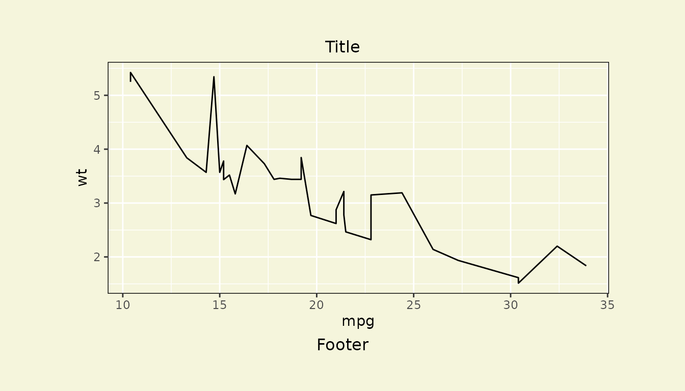
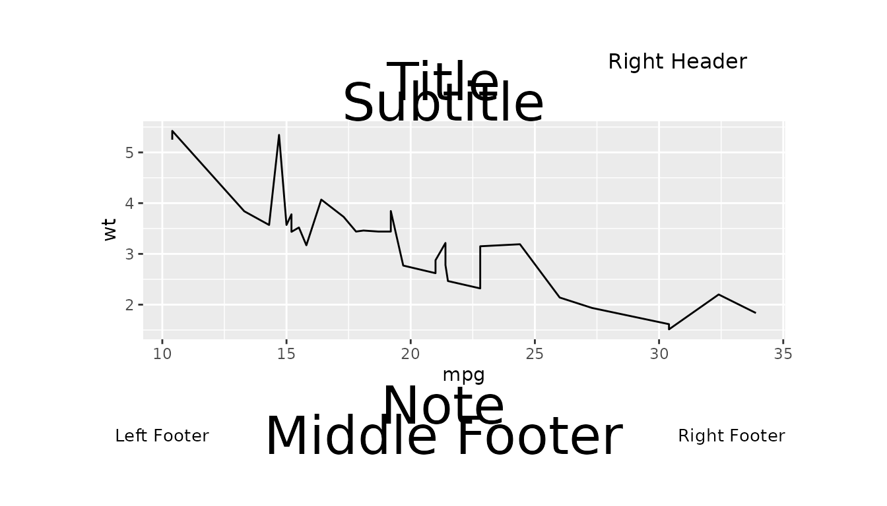
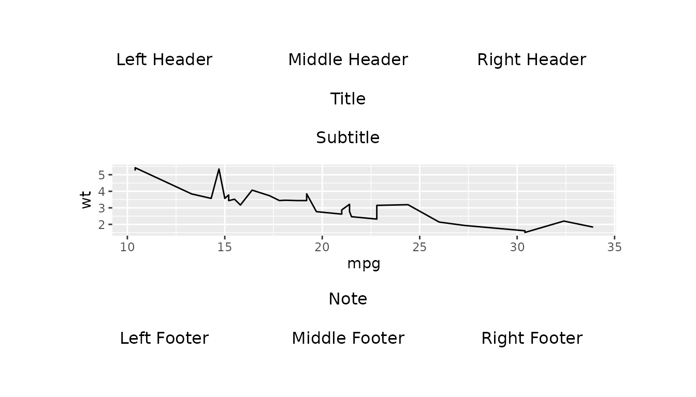

Introduction
This document provides simple examples to illustrate the use of
gridify to add headers, footers and more to both figures
and tables.
We will cover the use of simple_layout(),
complex_layout(), pharma_layout_base(),
pharma_layout_A4() and pharma_layout_letter(),
and show how to add these layouts to ggplot2 figures, base
R figures, flextables, and gt tables.
gridify does not support rtables directly,
but we will demonstrate how users can implement gridify
with rtables by converting them to
flextables.
Examples with Figures
We can use gridify with both ggplot2
figures and base R figures.
Examples with ggplot2 Figures
Precedence of Operators
When using the ggplot2 package in conjunction with pipes
(%>% or native |>), it’s important to
understand the precedence of operators to ensure your code works as
expected.
In R, the pipe operator (%>% or |>)
has a higher precedence than the addition operator (+) used
by ggplot2. This means that the %>% or
|> operator will be evaluated before the +
operator.
Because of this, if you’re piping into a ggplot2 call,
you need to wrap it in brackets () or {}. This
ensures that the entire ggplot2 call is evaluated first,
before the result is passed to the next function in the pipe.
Here’s an example:
Simple Layout Example
Here we create a line plot of mpg against
wt using the mtcars dataset.
library(gridify)
fig_obj <- ggplot2::ggplot(data = mtcars, ggplot2::aes(x = mpg, y = wt)) +
ggplot2::geom_line()We then use the gridify() function to apply
simple_layout().
g <- gridify(fig_obj, layout = simple_layout())Next, we use the set_cell() function to add a title and
footer to our figure before printing it.
Complex Layout Example
Here we create a line plot of mpg against
wt using the mtcars dataset.
We then use gridify() to apply
complex_layout().
g <- gridify(fig_obj, layout = complex_layout()) %>%
set_cell("header_left", "Left Header") %>%
set_cell("header_middle", "Middle Header") %>%
set_cell("header_right", "Right Header") %>%
set_cell("title", "Title") %>%
set_cell("subtitle", "Subtitle") %>%
set_cell("note", "Note") %>%
set_cell("footer_left", "Left Footer") %>%
set_cell("footer_middle", "Middle Footer") %>%
set_cell("footer_right", "Right Footer")
print(g)Pharma Layout Examples
Pharma layout base, letter, and A4 are specific layouts for
pharmaceutical outputs provided by the gridify package.
They have identical predefined cells for headers, footers, titles,
subtitles, notes, watermarks, and references. Some of these cells are
set by default but can be overwritten.
Pharma Layout Base Example
Here we create a line plot of mpg against
wt using the mtcars dataset. We then use the
gridify() function to apply
pharma_layout_base().
figure_obj <- ggplot2::ggplot(data = mtcars, ggplot2::aes(x = mpg, y = wt)) +
ggplot2::geom_line()
g <- gridify(object = figure_obj, layout = pharma_layout_base()) %>%
set_cell("header_left_1", "Left Header 1") %>%
set_cell("header_left_2", "Left Header 2") %>%
set_cell("header_left_3", "Left Header 3") %>%
set_cell("header_right_1", "Right Header 1") %>%
set_cell("header_right_2", "Right Header 2") %>%
set_cell("header_right_3", "Right Header 3") %>%
set_cell("output_num", "Output") %>%
set_cell("title_1", "Title 1") %>%
set_cell("title_2", "Title 2") %>%
set_cell("title_3", "Title 3") %>%
set_cell("by_line", "By Line") %>%
set_cell("note", "Note") %>%
set_cell("references", "References") %>%
set_cell("footer_left", "Left Footer") %>%
set_cell("footer_right", "Right Footer") %>%
set_cell("watermark", "Watermark")
print(g)Pharma Layout Letter Example
Here we apply pharma_layout_letter() with just the main
cells filled in.
figure_obj <- ggplot2::ggplot(data = mtcars, ggplot2::aes(x = mpg, y = wt)) +
ggplot2::geom_line()
g <- gridify(object = figure_obj, layout = pharma_layout_letter()) %>%
set_cell("header_left_1", "My Company") %>%
set_cell("header_left_2", "<PROJECT> / <INDICATION>") %>%
set_cell("header_left_3", "<STUDY>") %>%
set_cell("header_right_2", "<Draft or Final>") %>%
set_cell("output_num", "<Figure> xx.xx.xx") %>%
set_cell("title_1", "<Title 1>") %>%
set_cell("title_2", "<Title 2>") %>%
set_cell("note", "<Note or Footnotes>") %>%
set_cell("references", "<References:>") %>%
set_cell("footer_left", "Program: <PROGRAM NAME>, YYYY-MM-DD at HH:MM") %>%
set_cell("footer_right", "Page xx of nn") %>%
set_cell("watermark", "Draft")
print(g)Pharma Layout A4 Example
Here we apply pharma_layout_A4() to the prior example.
Note the difference in the margin on the right for the A4 sized
output.
figure_obj <- ggplot2::ggplot(data = mtcars, ggplot2::aes(x = mpg, y = wt)) +
ggplot2::geom_line()
g <- gridify(object = figure_obj, layout = pharma_layout_A4()) %>%
set_cell("header_left_1", "My Company") %>%
set_cell("header_left_2", "<PROJECT> / <INDICATION>") %>%
set_cell("header_left_3", "<STUDY>") %>%
set_cell("header_right_2", "<Draft or Final>") %>%
set_cell("output_num", "<Figure> xx.xx.xx") %>%
set_cell("title_1", "<Title 1>") %>%
set_cell("title_2", "<Title 2>") %>%
set_cell("note", "<Note or Footnotes>") %>%
set_cell("references", "<References:>") %>%
set_cell("footer_left", "Program: <PROGRAM NAME>, YYYY-MM-DD at HH:MM") %>%
set_cell("footer_right", "Page xx of nn") %>%
set_cell("watermark", "Draft")
print(g)Example with a Base R Figure
The gridify package can also be used with base R
figures. To use base R figures with gridify, we first
convert them to a formula using ~, before passing them to
gridify().
In this example, we create a simple base R bar plot and convert it to
a formula using ~.
formula_object <- ~ barplot(1:10)Then we pass the formula to gridify() and apply
complex_layout().
g <- gridify(object = formula_object, layout = complex_layout()) %>%
set_cell("header_left", "Left Header") %>%
set_cell("header_middle", "Middle Header") %>%
set_cell("header_right", "Right Header") %>%
set_cell("title", "Title") %>%
set_cell("subtitle", "Subtitle") %>%
set_cell("note", "Note") %>%
set_cell("footer_left", "Left Footer") %>%
set_cell("footer_middle", "Middle Footer") %>%
set_cell("footer_right", "Right Footer")
#> Loading required namespace: gridGraphics
print(g)Examples with Tables
We can add text elements using all the previously mentioned layouts
to flextable and gt tables using
gridify. rtables objects are not directly
supported by gridify, but we can use gridify
with rtables by first converting them to
flextables.
Example with a flextable
Here we create a flextable using the mtcars
dataset.
# (to use `gridify` with flextables we require the function `as_grob()` to convert flextables into grob
# objects, which exists in versions >= 0.8.0 of `flextable`)
library(flextable)
ft <- flextable::flextable(head(mtcars[1:10]))Then we pass the table to gridify() and apply
pharma_layout_letter().
g <- gridify(object = ft, layout = pharma_layout_letter()) %>%
set_cell("header_left_1", "My Company") %>%
set_cell("header_left_2", "<PROJECT> / <INDICATION>") %>%
set_cell("header_left_3", "<STUDY>") %>%
set_cell("header_right_2", "<Draft or Final>") %>%
set_cell("output_num", "<Table> xx.xx.xx") %>%
set_cell("title_1", "<Title 1>") %>%
set_cell("title_2", "<Title 2>") %>%
set_cell("note", "<Note or Footnotes>") %>%
set_cell("references", "<References:>") %>%
set_cell("footer_left", "Program: <PROGRAM NAME>, YYYY-MM-DD at HH:MM") %>%
set_cell("footer_right", "Page xx of nn") %>%
print(g)Example with a gt Table
Here we create a gt table using the mtcars
dataset.
# (to use `gridify` with gt tables we require the function `as_gtable()` to convert gt tables into
# grob objects, which exists in versions >= 0.11.0 of `gt`)
library(gt)
gt_obj <- gt::gt(head(mtcars[1:10]))Then we pass the table to gridify() and apply
pharma_layout_letter().
g <- gridify(object = gt_obj, layout = pharma_layout_letter()) %>%
set_cell("header_left_1", "My Company") %>%
set_cell("header_left_2", "<PROJECT> / <INDICATION>") %>%
set_cell("header_left_3", "<STUDY>") %>%
set_cell("header_right_2", "<Draft or Final>") %>%
set_cell("output_num", "<Table> xx.xx.xx") %>%
set_cell("title_1", "<Title 1>") %>%
set_cell("title_2", "<Title 2>") %>%
set_cell("note", "<Note or Footnotes>") %>%
set_cell("references", "<References:>") %>%
set_cell("footer_left", "Program: <PROGRAM NAME>, YYYY-MM-DD at HH:MM") %>%
set_cell("footer_right", "Page xx of nn")
print(g)Example with an rtable via flextable
conversion
We will demonstrate how to use gridify with
rtables by converting the rtable to a
flextable and then modifying any aesthetics.
Here we build a simple rtable using the
iris dataset.
library(rtables)
rtabl <- rtables::basic_table(main_footer = " ") %>%
rtables::split_cols_by("Species") %>%
rtables::analyze(
c("Sepal.Length", "Sepal.Width", "Petal.Length"),
function(x, ...) {
rtables::in_rows(
"Mean (sd)" = c(mean(x), stats::sd(x)),
"Median" = median(x),
"Min - Max" = range(x),
.formats = c("xx.xx (xx.xx)", "xx.xx", "xx.xx - xx.xx")
)
}
) %>%
rtables::build_table(iris)Then we convert the rtable to a flextable
using the function tt_to_flextable() from the
rtables.officer package. We specify
theme = NULL to prevent the addition of borders which
tt_to_flextable() adds by default.
library(rtables.officer)
#> Loading required package: rlistings
#> Loading required package: tibble
ft <- rtables.officer::tt_to_flextable(rtabl, theme = NULL)Next we adjust some of the aesthetics of the
flextable.
ft <- flextable::font(ft, fontname = "serif", part = "all")Finally we pass the flextable to gridify()
and apply pharma_layout_A4(), before printing the
table.
g <- gridify(ft, layout = pharma_layout_A4()) %>%
set_cell("header_left_1", "My Company") %>%
set_cell("header_left_2", "PROJECT") %>%
set_cell("header_left_3", "STUDY") %>%
set_cell("header_right_1", "CONFIDENTIAL") %>%
set_cell("header_right_2", "Draft") %>%
set_cell("header_right_3", "Data Cut-off: 2000-01-01") %>%
set_cell("output_num", "<Table> xx.xx.xx") %>%
set_cell("title_1", "Summary Table for Iris Dataset") %>%
set_cell("note", "Note") %>%
set_cell("references", "References") %>%
set_cell("footer_left", sprintf("Program: My Programme, %s at %s", Sys.Date(), format(Sys.time(), "%H:%M"))) %>%
set_cell("footer_right", "Page 1 of 1") %>%
set_cell("watermark", "DRAFT")
print(g)Using the show() Methods
When using gridify, we can utilize the
show() methods to find out information such as the cells
available in a gridify object or the specifications of a
layout object.
Here we take the earlier example where we applied
simple_layout() to a line plot.
fig_obj <- ggplot2::ggplot(data = mtcars, ggplot2::aes(x = mpg, y = wt)) +
ggplot2::geom_line()
g <- gridify(fig_obj, layout = simple_layout())To access the available cells in a gridify object, we
can use the show() method.
show(g)Alternatively, you can simply evaluate the object. This will display
the cells included in the applied layout, and whether or not they have
been filled by the gridify object.
g
#> gridifyClass object
#> ---------------------
#> Please run `show_spec(object)` or print the layout to get more specs.
#>
#> Cells:
#> title: empty
#> footer: emptyAs stated in the console output from the above example, we can use
show_spec(g) to gain further insight into the
specifications of g’s layout.
show_spec(g)
#> Layout dimensions:
#> Number of rows: 3
#> Number of columns: 1
#>
#> Heights of rows:
#> Row 1: 0 lines
#> Row 2: 1 null
#> Row 3: 0 lines
#>
#> Widths of columns:
#> Column 1: 1 npc
#>
#> Object Position:
#> Row: 2
#> Col: 1
#> Width: 1
#> Height: 1
#>
#> Object Row Heights:
#> Row 2: 1 null
#>
#> Margin:
#> Top: 0.1 npc
#> Right: 0.1 npc
#> Bottom: 0.1 npc
#> Left: 0.1 npc
#>
#> Global graphical parameters:
#> Are not set
#>
#> Background colour:
#> transparent
#>
#> Default Cell Info:
#> title:
#> row:1, col:1, text:NULL, mch:Inf, x:0.5, y:0.5, hjust:0.5, vjust:0.5, rot:0,
#> footer:
#> row:3, col:1, text:NULL, mch:Inf, x:0.5, y:0.5, hjust:0.5, vjust:0.5, rot:0,We can do the same with simple_layout() (and any other
layout) if we want to view its specs.
simple_layout()
#> gridifyLayout object
#> ---------------------
#> Layout dimensions:
#> Number of rows: 3
#> Number of columns: 1
#>
#> Heights of rows:
#> Row 1: 0 lines
#> Row 2: 1 null
#> Row 3: 0 lines
#>
#> Widths of columns:
#> Column 1: 1 npc
#>
#> Object Position:
#> Row: 2
#> Col: 1
#> Width: 1
#> Height: 1
#>
#> Object Row Heights:
#> Row 2: 1 null
#>
#> Margin:
#> Top: 0.1 npc
#> Right: 0.1 npc
#> Bottom: 0.1 npc
#> Left: 0.1 npc
#>
#> Global graphical parameters:
#> Are not set
#>
#> Background colour:
#> transparent
#>
#> Default Cell Info:
#> title:
#> row:1, col:1, text:NULL, mch:Inf, x:0.5, y:0.5, hjust:0.5, vjust:0.5, rot:0,
#> footer:
#> row:3, col:1, text:NULL, mch:Inf, x:0.5, y:0.5, hjust:0.5, vjust:0.5, rot:0,Note: This is effectively the same as calling
show_spec(simple_layout).
Graphical Parameters
Within every layout function, you can set the global graphical
parameters for all text elements and default graphical parameters for
individual text elements. You can use the show_spec()
function to see if global and default graphical parameters are set.
You can alter individual graphical parameters using the
set_cell() function. Setting a value at the individual
level supersedes the global level.
If not specified in your function calls, the defaults within the
gridify function are used.
Please read more about Default Graphical Parameters in
vignette("create_custom_layout", package = "gridify").
To see all available graphical parameters view grid::gpar documentation.
Global and Individual Graphical Parameters Example
Here is an example where we set global graphical parameters to a
complex layout. We set the font colour to "navy", and font
size to 12.
figure_obj <- ggplot2::ggplot(data = mtcars, ggplot2::aes(x = mpg, y = wt)) +
ggplot2::geom_line()
g <- gridify(object = figure_obj, layout = complex_layout(global_gpar = grid::gpar(col = "navy", fontsize = 12))) %>%
set_cell("header_left", "Left Header") %>%
set_cell("header_middle", "Middle Header") %>%
set_cell("title", "Title") %>%
set_cell("subtitle", "Subtitle") %>%
set_cell("note", "Note") %>%
set_cell("footer_left", "Left Footer") %>%
set_cell("footer_middle", "Middle Footer") %>%
set_cell("footer_right", "Right Footer")Now we set individual graphical parameters for the
right_header. We set the font colour to
"purple" and the font size to 20.
Background Colour Example
Here is an example of how to set the background colour using the
background argument in simple_layout(). By
default, it uses grid::get.gpar()$fill (white background).
In this example, we set the background colour to
"beige".
The background argument works across all built-in layout
functions, including simple_layout(),
complex_layout(), pharma_layout_base(),
pharma_layout_A4(), and
pharma_layout_letter(). It can also be applied in any
custom layouts you create
(vignette("create_custom_layout", package = "gridify")).
Note: When using ggplot2, you may also
need to set the plot’s background colour to match the layout’s
background.
figure_obj <- ggplot2::ggplot(data = mtcars, ggplot2::aes(x = mpg, y = wt)) +
ggplot2::theme(
plot.background = ggplot2::element_rect(fill = "beige", colour = NA), # Entire plot background
panel.background = ggplot2::element_rect(fill = "beige", colour = NA), # Panel (where data is plotted)
panel.border = ggplot2::element_rect(colour = "black", fill = NA)) +
ggplot2::geom_line()
g <- gridify(figure_obj, layout = simple_layout(background = "beige")) %>%
set_cell("title", "Title") %>%
set_cell("footer", "Footer")
print(g)
set_cell() Arguments
As well as adjusting the individual graphical parameters as shown
above, we can also use set_cell() to customise various
features such as maximum characters per line, position, and rotation for
text elements.
Maximum Characters
We can specify the maximum number of characters per line using the
argument mch. This is useful for wrapping long strings
across multiple lines.
Here is an example of a figure with simple_layout()
applied. We set the footer to a long string, and then set the maximum
number of characters per line to 45 using the
mch argument.
figure_obj <- ggplot2::ggplot(data = mtcars, ggplot2::aes(x = mpg, y = wt)) +
ggplot2::geom_line()
long_footer_string <- paste0(
"This is a footer. We can have a long description here.",
"We can have another long description here.",
"We can have another long description here."
)
g <- gridify(figure_obj, layout = simple_layout()) %>%
set_cell("title", "Title") %>%
set_cell("footer", long_footer_string, mch = 45)
print(g)Position and Rotation
We can also use set_cell() to adjust position and
rotation of text elements:
xandydefine the x and y coordinates of the text element. For examplex = 0places the element at the far left andx = 1at the far right.-
hjustandvjustcontrol how the text element is anchored relative to thexorypoint. For instance:-
hjust = 0aligns the left edge of the element tox. -
hjust = 0.5centers the element atx. -
hjust = 1aligns the right edge of the element tox.
-
-
vjustworks in a similar way withy.-
vjust = 0aligns the bottom edge of the element toy. -
vjust = 0.5centers the element aty. -
vjust = 1aligns the top edge of the element toy.
-
rotsets the rotation angle of the text element in degrees, applied anticlockwise from the x-axis.
x, y, hjust, and
vjust all take values between 0 and
1.
We now take the previous example and apply x = 0,
hjust = 0, and rot = 5 to the footer. This
aligns the left edge of the footer to the left corner of the cell, with
a rotation of 5 degrees.
Altering Scales and Adjusting Dimensions
When using the simple_layout() and
complex_layout() functions, there is an optional
scales argument which can be either "fixed"
(default) or "free".
The "fixed" scale ensures that cells for text elements
(titles, footers, etc.) retain a static height, with the figure / table
taking up the remaining space. This prevents text overlap while
maintaining a structured layout, but may result in different height
proportions between the text elements and the output. The
"free" scale sets the heights of the cells to be
proportional to the size of the output.
Here is an example of a figure with complex_layout() and
the default scales = "fixed" applied.
fixed_scales_g <- gridify(
object = ggplot2::ggplot(data = mtcars, ggplot2::aes(x = mpg, y = wt)) +
ggplot2::geom_line(),
layout = complex_layout()
) %>%
set_cell("header_right", "Right Header") %>%
set_cell("title", "Title", gpar = grid::gpar(fontsize = 30)) %>%
set_cell("subtitle", "Subtitle", gpar = grid::gpar(fontsize = 30)) %>%
set_cell("note", "Note", gpar = grid::gpar(fontsize = 30)) %>%
set_cell("footer_left", "Left Footer", hjust = 1, vjust = 0.5, gpar = grid::gpar(fontsize = 10)) %>%
set_cell("footer_middle", "Middle Footer", gpar = grid::gpar(fontsize = 30)) %>%
set_cell("footer_right", "Right Footer", hjust = 0, vjust = 0.5, gpar = grid::gpar(fontsize = 10))
print(fixed_scales_g)When we apply scales = "free" text elements scale
dynamically, which may cause overlap if the output space is small.
free_scales_g <- gridify(
object = ggplot2::ggplot(data = mtcars, ggplot2::aes(x = mpg, y = wt)) +
ggplot2::geom_line(),
layout = complex_layout(scales = "free")
) %>%
set_cell("header_right", "Right Header") %>%
set_cell("title", "Title", gpar = grid::gpar(fontsize = 30)) %>%
set_cell("subtitle", "Subtitle", gpar = grid::gpar(fontsize = 30)) %>%
set_cell("note", "Note", gpar = grid::gpar(fontsize = 30)) %>%
set_cell("footer_left", "Left Footer", hjust = 1, vjust = 0.5, gpar = grid::gpar(fontsize = 10)) %>%
set_cell("footer_middle", "Middle Footer", gpar = grid::gpar(fontsize = 30)) %>%
set_cell("footer_right", "Right Footer", hjust = 0, vjust = 0.5, gpar = grid::gpar(fontsize = 10))
print(free_scales_g)
When working with .Rmd or .Qmd files, we
can also remove the text overlap when scales = "free" by
adjusting the knitr options fig.width and
fig.height to expand the output.
print(free_scales_g)When exporting to .pdf, .png or
.jpeg we can remove text overlap by adjusting
width and height whilst using the
export_to() function. This will be explained in more detail
in the section Exporting to PDF, PNG, TIFF,
and JPEG below.
Adjusting the Height of Rows using Global Options
gridify provides two global options
(gridify.adjust_height.default and
gridify.adjust_height.line) for adjusting row heights in
layouts, based on measurement height units and when
adjust_height (a layout argument) equals
TRUE.
It is not recommended to set these options unless truly needed, as it may lead to inconsistencies between projects.
How These Options Work
By default:
- For non-line units (
"cm","inches","mm"), row heights are adjusted by0.25. - For line-based units (
"lines"), row heights are adjusted by0.10.
These values can be increased to create more spacing between text elements using the following global options:
-
gridify.adjust_height.default– applies when row heights are in"cm","inches", or"mm". -
gridify.adjust_height.line– applies when row heights are in"lines".
Please note that these options will not affect any
row with a unit of "npc", as then the row height is not
defined by a measurement but a percentage of available height. These
options will work only with height units "cm",
"inch", "mm", or "lines" and when
the adjust_height argument equals TRUE.
For simple_layout() and
complex_layout():
- When
scales = "free", the height unit is"npc"(not supported by either adjustment option). - When
scales = "fixed"(the default), the height unit is"lines", making onlygridify.adjust_height.lineapplicable. -
adjust_heightis always set toTRUEwithin the function code.
For pharma_layout_base(),
pharma_layout_letter() and
pharma_layout_A4():
- The height unit is
"lines", making onlygridify.adjust_height.lineapplicable. - The
adjust_heightargument isTRUEby default, so users do not have to set this argument.
In summary, only gridify.adjust_height.line is
applicable to predefined layouts, and for simple_layout()
and complex_layout(), only when
scales = "fixed".
In contrast, gridify.adjust_height.default is not
applicable to any predefined layout. It can instead be used with custom
layouts in a similar way to gridify.adjust_height.line -
see
vignette("create_custom_layout", package = "gridify").
Examples using Global Options
Example with complex_layout()
Here is an example of the use of
gridify.adjust_height.line with
complex_layout(). We create a gridify object
by applying complex_layout() with
scales = "fixed" to a line plot and print the object to
view it with default adjustments.
g <- gridify(
object = ggplot2::ggplot(data = mtcars, ggplot2::aes(x = mpg, y = wt)) +
ggplot2::geom_line(),
layout = complex_layout()
) %>%
set_cell("header_left", "Left Header") %>%
set_cell("header_middle", "Middle Header") %>%
set_cell("header_right", "Right Header") %>%
set_cell("title", "Title") %>%
set_cell("subtitle", "Subtitle") %>%
set_cell("note", "Note") %>%
set_cell("footer_left", "Left Footer") %>%
set_cell("footer_middle", "Middle Footer") %>%
set_cell("footer_right", "Right Footer")
print(g)
Now we set gridify.adjust_height.line to
0.7 using the options() function. This
increases the height of the rows and the space between text
elements.

Example with pharma_layout_letter()
Here is an example of the use of
gridify.adjust_height.line with
pharma_layout_letter(). We set the
gridify.adjust_height.line option back to the default of
0.1. Then we create a gridify object by
applying pharma_layout_letter() to a line plot.
options(gridify.adjust_height.line = 0.1)
g <- gridify(
object = ggplot2::ggplot(data = mtcars, ggplot2::aes(x = mpg, y = wt)) +
ggplot2::geom_line(),
layout = pharma_layout_letter()
) %>%
set_cell("header_left_1", "My Company") %>%
set_cell("header_left_2", "<PROJECT> / <INDICATION>") %>%
set_cell("header_left_3", "<STUDY>") %>%
set_cell("header_right_2", "<Draft or Final>") %>%
set_cell("output_num", "<Figure> xx.xx.xx") %>%
set_cell("note", "<Note or Footnotes>") %>%
set_cell("references", "<References:>") %>%
set_cell("footer_left", "Program: <PROGRAM NAME>, YYYY-MM-DD at HH:MM") %>%
set_cell("footer_right", "Page xx of nn")
print(g)Now we set gridify.adjust_height.line to
0.7.
Export to PDF, PNG, TIFF, and JPEG
We can export gridify objects to PDF, PNG, TIFF, and
JPEG files using the export_to() function.
Here is an example where we export a gridify object to a
PDF file.
We take the earlier example where we applied
pharma_layout_letter() to a line plot.
gridify_obj <- gridify(
object = ggplot2::ggplot(data = mtcars, ggplot2::aes(x = mpg, y = wt)) +
ggplot2::geom_line(),
layout = pharma_layout_letter()
) %>%
set_cell("header_left_1", "My Company") %>%
set_cell("header_left_2", "<PROJECT> / <INDICATION>") %>%
set_cell("header_left_3", "<STUDY>") %>%
set_cell("header_right_2", "<Draft or Final>") %>%
set_cell("output_num", "<Figure> xx.xx.xx") %>%
set_cell("title_1", "<Title 1>") %>%
set_cell("title_2", "<Title 2>") %>%
set_cell("note", "<Note or Footnotes>") %>%
set_cell("references", "<References:>") %>%
set_cell("footer_left", "Program: <PROGRAM NAME>, YYYY-MM-DD at HH:MM") %>%
set_cell("footer_right", "Page xx of nn") %>%
set_cell("watermark", "Draft")Then we pass the gridify object to the
export_to() function. We specify the desired file type and
name using the to argument.
export_to(gridify_obj, to = "output.pdf")Instead of just a file name, the to argument can also be
set to a file path if we want to change the location where the file is
saved.
export_to(gridify_obj, to = "~/folder1/output.pdf")To export the object to a PNG file, we specify a file name with the
.png file extension.
export_to(gridify_obj, to = "output.png")To export the object to a TIFF file, we specify a file name with the
.tiff or .tif file extension.
export_to(gridify_obj, to = "output.tiff")Similarly, to export the object to a JPEG file, we specify a file
name with the .jpeg or .jpg file extension. We
can also modify characteristics such as width and
height by passing them into export_to() after
the to argument.
export_to(gridify_obj, to = "output.jpeg", width = 2400, height = 1800, res = 300)Conclusion
These examples should give you a good understanding of how to use the
gridify package to add text elements to simple figures and
tables. Remember, you can customize the layout and text elements to suit
your needs. Happy gridifying!
To see how to use gridify with more complex examples
such as multi-page figures and tables please check out
vignette("multi_page_examples", package = "gridify"). If
you need a custom layout suited for your needs please check out
vignette("create_custom_layout", package = "gridify").